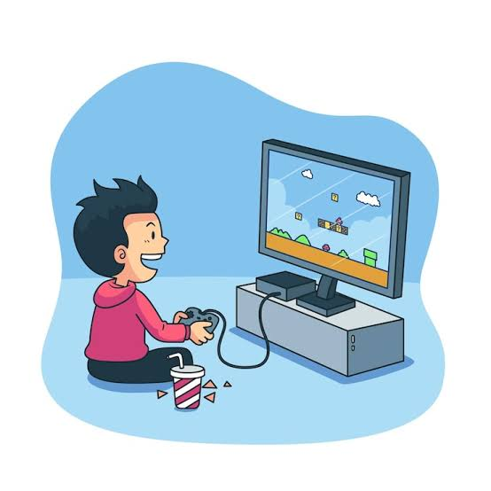

About Me
I am a passionate individual who enjoys exploring new interests and activities. I love learning, trying new experiences, and taking time to enjoy the things that make life fun and meaningful.
Here are a few things I enjoy doing in my free time.
I am a passionate individual who enjoys exploring new interests and activities. I love learning, trying new experiences, and taking time to enjoy the things that make life fun and meaningful.
Playing video games allows me to immerse myself in different worlds, challenge my problem-solving skills, and connect with friends online. It is a great way to relax and have fun after a long day.
